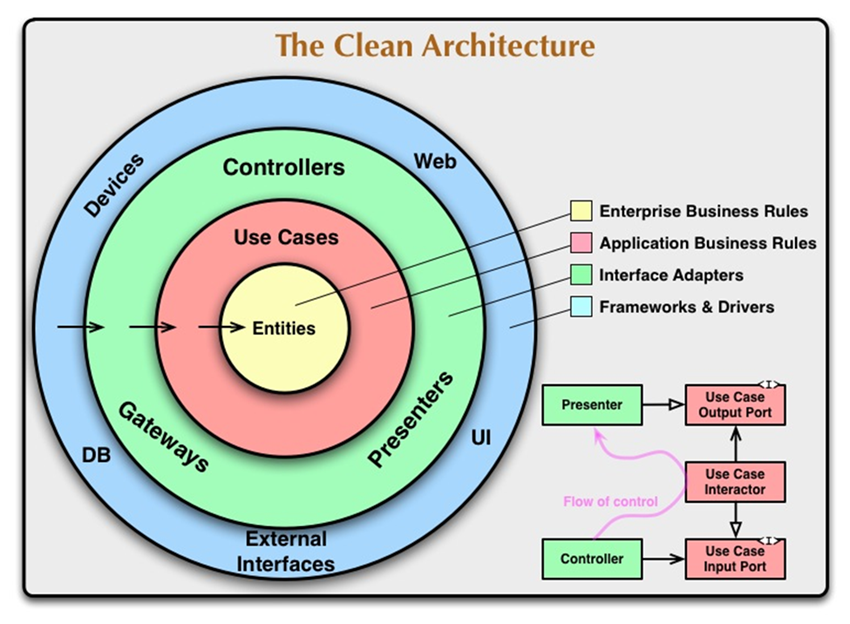
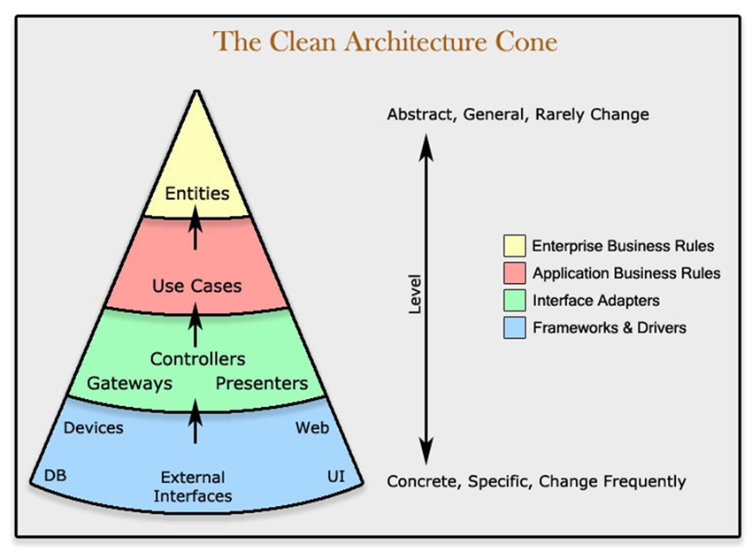

Welcome!
This is your homepage
Clean Architecture
Clean Architecture which is also known as Domain-Driven Design has evolved with considerable improvements in the last several years. Some architecture names used for clean architecture over the years are given below:
- Hexagonal Architecture (https://en.wikipedia.org/wiki/Hexagonal_architecture_(software))
- Onion Architecture
- Domain-Driven Design (DDD) or Domain Centric Architecture
- vertical Slice Architecture
- Clean Architecture
The above mentioned architectures have similar design principles that have the primary idea to keep the core business logic and application domain at the center of the solution structure. In this architecture, we make core application business logic and domain or entities independent of the presentation layer and data access layer.
Therefore, the whole idea of this architecture is to allow the core part, which consists of complete business logic and application entities, adaptive and flexible enough to deal with changing technology and interfaces. Additionally, the core application remains the same and independent of presentation layers, infrastructures, and databases.
In these fast-paced technologies, JavaScript frameworks, web framework, database and external parts become absolute or upgraded, using this clean architecture you can replace these items with minimum efforts. This architecture saves huge time because the core application business logic and entity are independent of framework, presentations, databases, and external parts. Subsequently, the architecture is sustainable and is loosely coupled core business logic and entity with presentation layer or framework.
Basic Principles
The primary idea in Clean Architecture is to make the solution adaptive, keep the core business or application logic use cases independent of frontend and external frameworks. In summary, we can outline the following outcomes of clean architecture,
-
Independent of UI
Using clean architecture, we should be able to change UI or presentation layers easily without changing the application layer and so on. UI can be from any front-end framework, or console UI, any web, and can be replaced without changing the other layers or rest of the system. -
Database Independent
The architecture should be flexible enough to swap the database without affecting the application use cases and entities. The solution can switch the dataset to MS SQL, MySQL, Oracle, MongoDB, or something else. -
Independent of External agency/libraries/Drivers
The business rules should be independent of external parties or agencies. -
Framework Independent
The core business or application rules should be independent of the existence of frameworks, libraries for the future. We can include the frameworks but as tools, and the solution should not be completely relied on those. -
Testable
The architecture should comply with the testing of the core application and business cases and rules without the UI, database, Web server, or any external component.
Clean Architecture Diagram
Generally, the clean architecture is delved with primary circular illustration presented by Robot Martin (Uncle Bob).

By Robert C. Martin (Uncle Bob)
This diagram perfectly shows the high-level concepts behind clean architecture. We can interpret this diagram in two ways, circular or hemisphere, however, you can understand the core idea from both approaches.
From the diagram, we see that entities are the inner core, which is generally known as business domain entities. It is also called Enterprise Business Rules.
These business entities are covered by use cases, also called application business rules. These use cases are called from presenters, controllers or gateways as shown in the above diagram. Further external interfaces, DB, UI, or web which are commonly called as public shell or public surface or interface. All the frameworks and drivers are in outermost layers. Additionally, we can observe that the flow comes from the public shell to inner entities.
If we understand from another side, the dependencies move from inner to outer, i.e., core to external or public surface. The core inner entities and use cases, also called business and application layers, have no dependencies and are less likely to change. Each layer of this circular diagram has dependencies on the layer next to it. The external layers are most likely to change based on technologies, frameworks and so on, consequently, the solution architecture has less impact in core applications’ logic.
Layers of Clean Architecture
In this section, I will elucidate the layers of clean architecture. We will again observe the layers from Uncle Bob’s illustration.

By Robert C. Martin (Uncle Bob)
Entities
This is also known as enterprise business rules. It consists of plain domains. In this layer, we add objects (entity or domain) with no frameworks and annotations. We add general logics that are applied to every domain like validations, base entities, and so on. They are the least affected by external changes and no dependencies.
Use cases
This is a pure logic layer where we write core business or application logic. This is also called Application Business rules. We, in general, use the term service or manager for application use cases. This layer uses a domain layer and builds results. In this use case, we don’t know who triggers or how the result will be presented. However, based on services, we keep business logic independent of UI or database. We may use some libraries, however, only as tools.
Interface Adapters
This layer acts as a communicator to convert data into desired format for storing into external sources like database, file system, 3rd parties, and convert data for use cases or business logic. This layer is also called as adapters that necessarily do the conversion of data in both ways. We can consider MVC of GUI or REST APIs at this level that consists of presenters, views, and controllers. It also implements the interfaces of use cases required for external components.
External Interfaces, (Frameworks and Drivers)
This is the outermost layer in this clean architecture which changes frequently based on the technologies, updates like database, Web Front-end frameworks. In this layer, we present the data to the UI or database.
Solution Designing
Clean architecture is a set of organizing principles, that is the first essential thing we need to understand. We can design the solution in various ways based on the requirements or personal adjustments, however, the core principles must be kept intact and implemented correctly.
Sample Structure looks like as shown below:

Domain Class Library – No dependencies, no project or class reference, no logic
Application Class Library – Only Domain is added as reference project, Pure business logic or services.
Domain and Application are the core of this solution which are independent of Infrastructure, WebUI, and external libraries.
Infrastructure Class Library – Application Class is added as reference. This class is responsible for external infrastructure communications like database storage, file system, external systems/APIs/Services and so on.
We can add more class libraries under this folder for external plugins or SDK to organize the solution in a better way.
Web UI – This is a presentation web UI project. This can be an MVC, front-end framework. If we are designing an API based solution, then we can keep both Web API and Front-end in this folder host. We add Application and Infrastructure as reference in this project.
This is a way of organizing and designing a clean architecture solution. This is one way of structuring the solution following the clean architecture principles. However, we can do the organization in several ways, keeping the core values intact.
In this illustration above, we have kept core applications independent and other infrastructure and web UI are dependent on core applications.
In the next article, I will design a real solution demonstrating the clean architecture implementation in .NET 6, stay tuned.
Conclusion
In this write-up, I have described the clean architecture in-depth with core values. The primary idea behind this clean architecture is to design in such a way that it should be adaptive and flexible enough to handle the changing technologies, external components, and web frontend frameworks. To achieve so, clean architecture provides organizing principles where we keep the core entities and business logic independent of presentation layers, infrastructures, databases, and external agents. Furthermore, I have illustrated an architectural diagram of clean architecture and have delved into it with the core principles. Additionally, I have explained the layers of clean architecture and finally shared the solution design diagram with an example. The above article will give you holistic concepts of clean architecture.
References
- https://www.c-sharpcorner.com/article/what-is-clean-architecture/
- https://rijsat.com/2022/02/01/what-is-clean-architecture/
- By Robert C. Martin (Uncle Bob)
- By Avi Kessner
- Administrator (login="admin" and password="admin")
- User (login="user" and password="user").
If you have any question on JHipster:
- JHipster homepage
- JHipster on Stack Overflow
- JHipster bug tracker
- JHipster public chat room
- follow @jhipster on Twitter
If you like JHipster, don't forget to give us a star on GitHub!